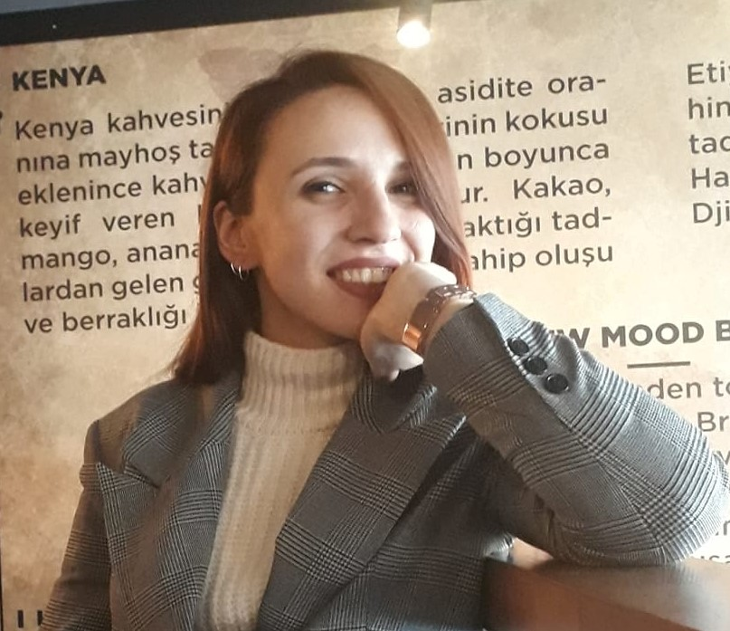

Dyt. Sümeyye TOP
Sağlıklı Yaşam Önerileri
Sağlıklı ve uzun bir hayat herkesin hayali...
Ancak bu hayalin gerçekleşmesi için genç yaşlarda önlem almak gerekiyor.
İşte uzmanından sağlıklı yaşam için öneriler

- Düzenli sağlık kontrolünüzü yaptırın.
- Yaşınıza uygun fiziksel aktiviteyi belirleyin ve düzenli olarak yapın, ideal kilonuzu koruyun, doğru beslenin.
- Daha az basit şeker, tuz ve yağ kullanıp meyve sebze ağırlıklı beslenin.
- Sigara içmeyin, içilen ortamda bulunmayın.
- Uyku düzeni ve kalitesine dikkat edin.
- Gündelik yaşamın stresinden uzak durmaya çalışın, kendinize vakit ayırın ve hobi edinin.
- az ya da kış aylarında fırsat bulduğunuz zamanlarda mutlaka tatil yapın.
- Kendinizle barışık olun, bolca gülün ve hayata olumlu bakın.